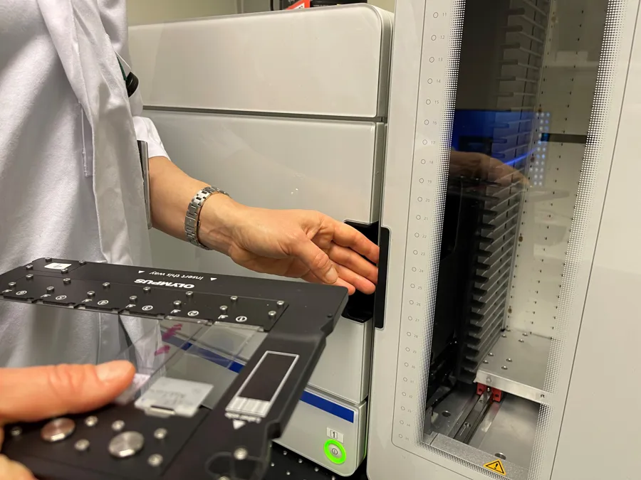

AI gjennombrudd kan revolusjonere kreftbehandling
Et samarbeid mellom Google DeepMind og Yale University har ført til utviklingen av en ny AI-modell som kan endre hvordan vi forstår og behandler kreft.
Kortversjonen
- AI-modellen C2S-Scale 27B analyserer enkeltcelledata og foreslår nye kombinasjoner av kreftbehandling.
- Modellen fant kombinasjonen silmitasertib + interferon som kan gjøre «kalde» svulster mer synlige for immunforsvaret.
- Dette regnes som et gjennombrudd fordi AI genererer ny vitenskapelig kunnskap, ikke bare analyserer data.
- Resultatene er lovende, men er fortsatt på preklinisk stadium – kliniske studier gjenstår.
- Kan få betydning for norsk forskning, bioteknologi og helsepolitikk, men reiser etiske og regulatoriske spørsmål.
- Viser en fremtid der AI fungerer som en medoppdager i medisinsk forskning.
Hva skjedde?
Forskerne lanserte modellen C2S-Scale 27B som analyserer enkeltcelledata (single-cell RNA) og identifiserer nye behandlingskombinasjoner for kreft. Modellen genererte en hypotese som senere ble bekreftet i biologiske studier.
Hvordan virker det?
Modellen brukte store datasett fra enkeltceller og anvendte teknikker fra både språk- og biologimodeller. Ved å tolke celledata som språk klarte AI-en å se mønstre som forskere tidligere ikke hadde identifisert.
Den foreslo legemiddel-kombinasjonen silmitasertib (CK2-hemmer) pluss interferon for å gjøre «kalde» tumorer mer synlige for immunforsvaret.
Hvorfor omtales dette som et gjennombrudd?
I motsetning til tidligere AI-systemer som kun klassifiserer eller analyserer data, demonstrerer denne modellen evnen til å generere *ny vitenskapelig kunnskap*. Det viser at AI kan være mer enn et verktøy den kan være en medoppdager.
Teknologien bak
Modellen er stor, med 27 milliarder parametere, og er trent for å behandle biologidata på samme måte som språkdata. Den ble anvendt i to ulike immunkontekster («immune-context-positive» og «immune-neutral») for å identifisere riktig kombinasjon av legemiddel og behandling.
Hva betyr dette for kreftbehandling?
Mange svulster beskrives som «kalde» fordi de unngår immunforsvaret. Ved å gjøre dem «varme» – altså synlige for immunforsvaret kan behandlingsutsiktene forbedres betraktelig. Dersom hypotesen og behandlingsmetoden holder i kliniske studier, kan det føre til nye terapier for krefttyper som i dag er vanskelige å behandle.
Fremtiden: AI som medoppdager
Dette markerte et skifte: AI fungerer ikke lenger bare som et verktøy, men som en faktisk medoppdager i medisinsk forskning. Fremover kan lignende modeller bidra til å fremskynde utviklingen av nye terapier og endre måten vi forstår medisinsk forskning på.